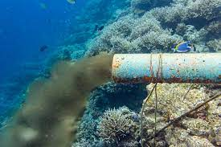

Ocean Gardens
Ocean gardens are innovative ecosystems where marine life and sustainable agriculture
unite, fostering biodiversity, food security, and environmental stewardship
Ocean gardens are innovative ecosystems where marine life and sustainable agriculture
unite, fostering biodiversity, food security, and environmental stewardship
Imagine you visit a landlocked region where none of the inhabitants have ever been to the ocean. Although they may not be aware of it, every single day these people breathe oxygen generated by marine photosynthesis, benefit from the lowered atmospheric carbon dioxide (CO2) levels induced by marine phytoplankton, and consume food that was fueled by marine ecosystems.
In essence, the ocean can be viewed as a garden that provides beauty, resources, and CO2 drawdown for society. Your challenge is to create an accessible platform that visually, sonically, and interactively educates users about important ocean-provided services in a way they can easily understand.
The ocean is an important aspect of the Earth's ecology, serving a variety of functions. It helps to control the climate by absorbing and storing heat and carbon dioxide, and it also helps to promote biodiversity by providing home for a variety of marine creatures. The ocean is also an important source of food, with fishing being a major sector that sustains livelihoods and economies all around the world. Furthermore, the ocean has enormous economic importance, since it supports businesses like as shipping, offshore oil and gas development, and coastal tourism.
The ocean also offers leisure options such as swimming, surfing, boating, fishing, and diving. Marine biology, oceanography, and climate science study give essential insights into the ocean's functioning and interactions with Earth's systems. However, natural calamities such as hurricanes and tsunamis pose substantial hazards and difficulties to the ocean, emphasizing the significance of preparedness and mitigation strategies. The ocean has enormous cultural significance for many communities across the world, inspiring art, literature, music, and spirituality. Prioritizing responsible behavior is critical to minimizing human influence on marine ecosystems and ensuring their sustained health and sustainability for future generations.
The ignorace of the important of Ocean
Landlocked populations often lack knowledge about the ocean, leading to limited environmental awareness and misconceptions about climate change. This ignorance can result in overfishing, pollution, and habitat destruction, harming marine ecosystems and biodiversity. Misunderstandings about the ocean's role in climate regulation can hinder effective climate action. Economic opportunities tied to the ocean, such as fisheries, tourism, and shipping, may be overlooked. Additionally, ignorance about ocean-related disasters can leave landlocked areas ill-prepared for such events. Addressing this ignorance through educational initiatives and accessible online resources is crucial.